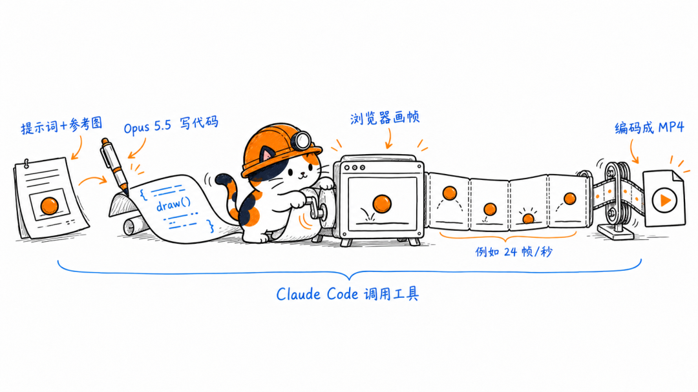
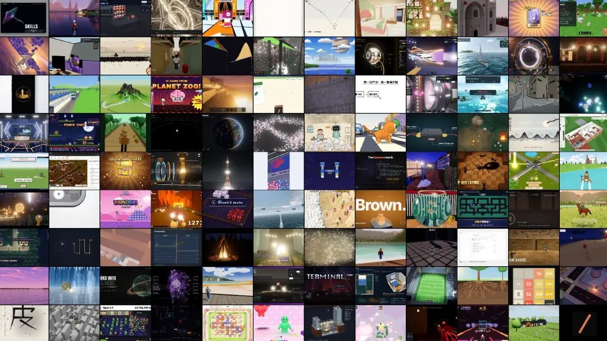
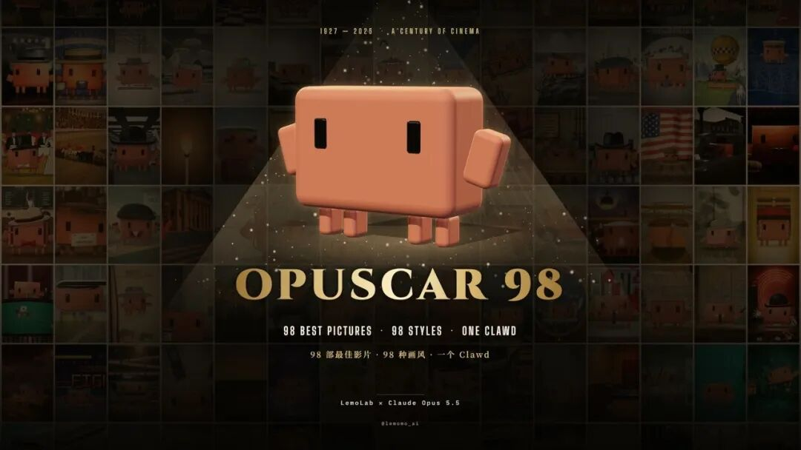
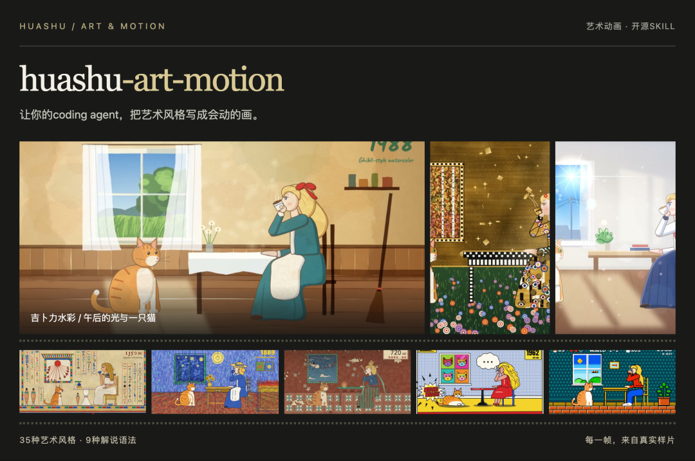
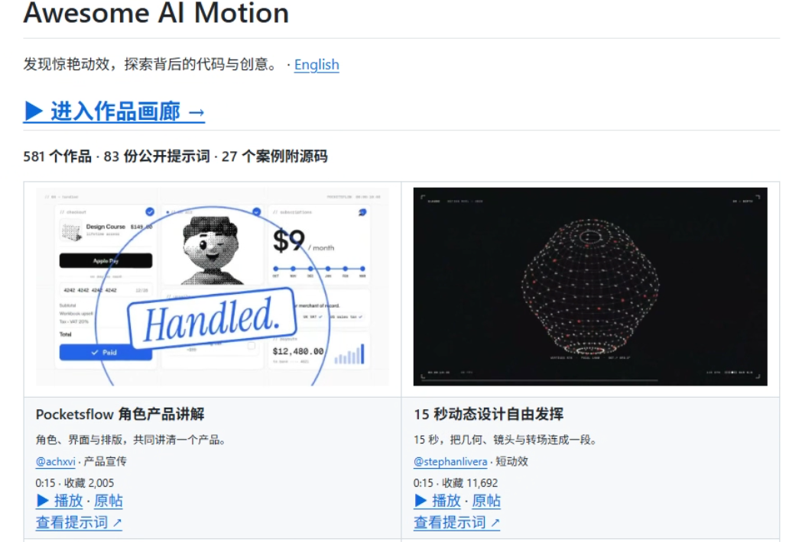
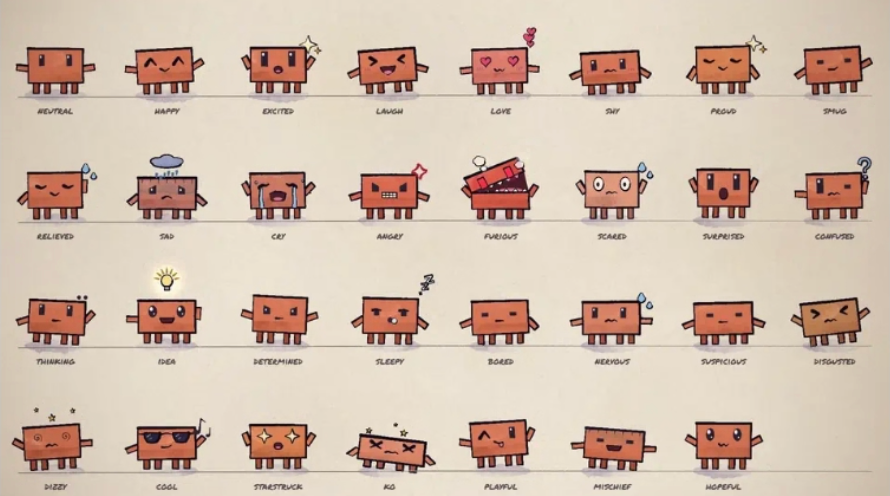

最近，X 上出现了很多百万播放的 Claude Opus 5.5 视频作品。
kirill 的动效作品集，有 190 万播放。
Donald 重制的《Claude Pop》MV，有 390 万播放。
对做内容的人来说，这真的是史诗级别的技能提升，各种视频都能不用视频模型就能出了：可以给文章做一段动画解释，为软件录一支宣传片，或者把准备好的配音稿做成视频。
过去需要逐个调整的字幕、图形和转场，现在都可以把要求交给 Claude Oups 5.5。
还没试过的可以用我的万能提示词试试，我还给大家找了几个 GitHub 上的的提示词项目供大家参考。
01
Claude Opus 5.5 怎么做视频
Claude Opus 5.5 做视频，不是代表这个模型已经变成了视频模型。Claude Opus 5.5 还是只能看文字和图片，并输出文字。
视频画面都是由代码实现的，Claude Opus 5.5 写好代码，代码在浏览器里做出画面，连续画面达到 24 张每秒后，就会让眼睛看到连续的画面，最后再交给别的程序把画面拍成视频即可。
所以大家只需要输入提示词，其他的都交给 Claude Opus 5.5 即可。

我们来试着做一支普通人能看懂的诺奖科普动画
2026 年诺贝尔物理学奖，授予弗朗西斯·哈尔岑，表彰他对冰立方中微子天文台的决定性贡献，以及发现具有天体物理起源的高能中微子。
普通人一般都不懂这个方面，我们看看 Claude Oups 5.5 是如何做出普通人都能看懂的视频的。
▲上下滑动查看全文
探测原理的动画做得很好：中微子进入冰层，与原子核发生相互作用，产生的带电粒子发出蓝光，再由传感器记录。橙、绿、蓝三种颜色把不同对象区分开，观众能跟着画面理解探测过程，浅显易懂。
什么，你说你不会写提示词？那这个通用提示词模板还不收好：
▲上下滑动查看全文
02
相关项目
对于不想去折腾提示词的朋友，直接看这些提示词项目，选车自己想做的类型，然后改改就能用。
Awesome Opus 5.5 Videos

Awesome Opus 5.5 Videos 是一个作品与提示词案例库，收录动态图形、科普、3D 等作品，提供预览和作者公开的制作要求。
使用时，我们找到需要复刻的作品，打开对应 Prompt 文件，替换主题、文字、时长和素材就行。
Lemo-Opuscar

Lemo-Opuscar 是一个影片风格库与 Claude Code 插件，包含风格提示词、代码样片、导演指南和制作工具。
安装插件后，我们在影片文件夹里指定好主题、画风、语言、时长和素材，例如：用 Lemo-Opuscar 制作一支白板科普动画。Claude Code 会读取对应指南，组织分镜、动画、声音和渲染。
归藏 product video skill
归藏 product video skill 提供了一个软件宣传片的制作流程。
安装后，在产品代码库中指定更新范围和视频规格，例如：把 Claude Code 最近三周的更新做成一支 50 秒宣传片。Claude Code 会按流程检查功能与组件，使用真实界面制作演示，再导出视频和可修改工程。
huashu-art-motion

huashu-art-motion 是一个艺术动画制作 Skill，提供 35 种艺术风格配方、9 种解说动画语法，以及代码样片、渲染脚本和画面检查工具。
安装后，把脚本、旁白音频、字幕时间轴和参考素材交给 Claude Code，指定调用 huashu-art-motion，并选择画风与解说形式。Claude Code 会读取对应文件，按脚本编写动画代码，安排图形、文字和镜头的出现顺序。
Awesome AI Motion

Awesome AI Motion 是一个动效、创意视频与交互作品资源库，按产品宣传、知识讲解、角色动画等用途分类。
使用前，找到接近目标视频的案例，查看作者公开的提示词，替换主题、时长、画幅和素材要求后交给 Claude Code 就行。有源码的案例还可以继续查看工程与实现方式，让 Claude Code 参考其中的动画结构。
ClaudeAnimationBase

ClaudeAnimationBase 是一个手绘角色动画基础工程，仓库预置 Clawd 角色、31 种表情，以及动作、镜头和转场函数。
下载仓库后，在项目文件夹中启动 Claude Code，让它先读取 ANIMATION_GUIDE.md，再说明剧情、角色和时长。Claude Code 会按指南先写分镜，再逐镜编写动画，生成静帧拼图检查画面，最后调用 render.mjs 导出 MP4。
Awesome Claude Video Skills
Awesome Claude Video Skills 是面向 Claude Code等工具的视频制作资源导航，按渲染框架、产品宣传、科普讲解、剪辑与后期等用途整理开源 Skill 和工具包。
使用时，进入选中项目的仓库，把脚本、素材和视频规格交给 Claude Code，调用选中的工具制作视频即可。
03
挖一挖
视频制作这个方面是有持续的需求的：软件要介绍新功能，课程要解释知识，品牌要为不同渠道准备不同版本的素材。
能持续制作、修改和交付视频，对创作者有非常大的实际价值。
Claude Opus 5.5 让个人和小团队有能力积累自己的动画工程。角色、字幕、镜头和品牌样式做好以后，可以通过替换文案、数据和素材继续制作。
以后，产品界面、动态图表、文字排版等需要精确修改的需求，会有一部分转向代码动画；人物表演、自然场景和复杂视觉素材，仍然是 AI 视频模型的天下。
当然，我更看好两种方式结合：视频模型生成素材，代码组织图形、字幕和节奏，创作者负责脚本与审片。
制作工具越容易使用，更多人就有机会参与内容生产，也会带来更激烈的竞争。
对创作者而言，积累可复用的工程、理解受众，并持续交付有用的内容，会比追逐某一次惊艳的生成结果更有长期价值。